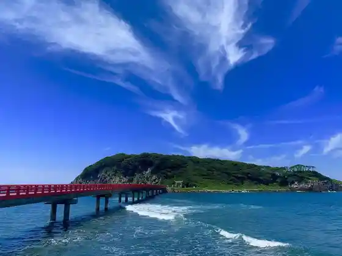
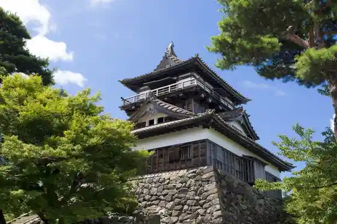

Tojimbo
Sakaishi, Fukui · 0776-81-3700 · Official / source link
Osu Shima
Sakaishi, Fukui · 0776-82-1555 · Official / source link

Shiba Matsurigoto Warudo
Sakaishi, Fukui · 0776-81-2110 · Official / source link
Echizen Matsushima Aquarium
Sakaishi, Fukui · 0776-81-2700 · Official / source link
Maruoka Shiro
Sakaishi, Fukui · 0776-66-0303 · Official / source link

Mikuni Minato Retoro
Sakaishi, Fukui · 0776-82-8392 · Official / source link
Mikuni Sansetto Beach
Sakaishi, Fukui · 0776-82-1555 · Official / source link
Fureai Park Sanri Hama (Roadside Station Mikuni)
Sakaishi, Fukui · 0776-82-3339 · Official / source link
Fukuiken Jido Science Museum (Enzeru Land Fukui)
Sakaishi, Fukui · 0776-51-8000 · Official / source link
Echizen Matsushima
Sakaishi, Fukui · 0776-82-1555 · Official / source link
Kyoryu Forest
Sakaishi, Fukui · 0776-81-2110 · Official / source link
Minshuku Nakajima
Sakaishi, Fukui · 0776-81-2852 · Official / source link
Yuri no Sato Park
Sakaishi, Fukui · 0776-58-0100 · Official / source link
Roadside Station Sakai (Sakaishi Chiiki Koryu Center (Inesu))
Sakaishi, Fukui · 0776-72-7600 · Official / source link
Taki Tani Tera
Sakaishi, Fukui · 0776-82-0216 · Official / source link
Tojimbo Shota Ro
Sakaishi, Fukui · 0776-82-1199 · Official / source link
Mikuni Onsen O Yado Araya
Sakaishi, Fukui · 0776-81-3522 · Official / source link
Hamachi Beach
Sakaishi, Fukui · 0776-82-1555 · Official / source link
Dejima So
Sakaishi, Fukui · 0776-82-1624 · Official / source link
Sakaishi Kaihin Nature Park
Sakaishi, Fukui · 0776-82-2743 · Official / source link
Minshuku Meiji
Sakaishi, Fukui · 0776-126-150 · Official / source link
Takeda no Yama Village Koryu Center
Sakaishi, Fukui · 0776-50-2393 · Official / source link
Ikoi no Yado Nakamoto
Sakaishi, Fukui · 0776-82-2600 · Official / source link
Chihiro
Sakaishi, Fukui · 0776-82-6766 · Official / source link
Mikuni Shrine
Sakaishi, Fukui · 0776-81-2514 · Official / source link
Kyu Morita Ginko Main Shop
Sakaishi, Fukui · 0776-82-0299 · Official / source link
Maruoka Onsen Takekurabe
Sakaishi, Fukui · 0776-67-2333 · Official / source link
Mikuni Rabenda Farm
Sakaishi, Fukui · Official / source link
Brilliant Heart Museum
Sakaishi, Fukui · 090-6819-9956 · Official / source link
Araiso Promenade Ni no Hama Promenade
Sakaishi, Fukui · 0776-82-1555 · Official / source link
Fukuiken Sogo Guriin Center
Sakaishi, Fukui · 0776-67-0002 · Official / source link
Sakaishi Ryusho Museum
Sakaishi, Fukui · 0776-82-5666 · Official / source link
Maruoka Shiro Kankojoho Center (Maruoka Shiro Machiyorimagatto)
Sakaishi, Fukui · Official / source link
Kyuka Village Echizen Mikuni Oto Campground
Sakaishi, Fukui · 0776-82-7400 · Official / source link
Ippitsu Keijo Nippon'ichi Mijikai Tegami no Kan
Sakaishi, Fukui · 0776-67-5100 · Official / source link
Senko no Ie (Tsubokawa Ie House)
Sakaishi, Fukui · 0776-67-2111 · Official / source link
Sanemori Do (Sanemori Sha)
Sakaishi, Fukui · Official / source link
Ikegami Himawari Park
Sakaishi, Fukui · Official / source link
Osakana Shuseki Tokoro Ototo (Te Burade OK! Umizuri Ri Experience)
Sakaishi, Fukui · 0776-82-8557 · Official / source link
Fukuiken Kyoiku Sogokenkyusho Kyoiku Museum
Sakaishi, Fukui · 0776-58-2250 · Official / source link
Machi no Kura
Sakaishi, Fukui · 0776-82-8392 · Official / source link
Minshuku Itamoto
Sakaishi, Fukui · 0776-026-193 · Official / source link
Takekurabe Plaza
Sakaishi, Fukui · 0776-67-3097 · Official / source link
Kyu Kishi Meika
Sakaishi, Fukui · 0776-82-0947 · Official / source link
Takeda Suisha Merodi Park
Sakaishi, Fukui · 0776-68-0364 · Official / source link
Nitta Yoshisada Kobo Tokoro (Shonen Tera)
Sakaishi, Fukui · 0776-66-3675 · Official / source link
Roku Ro Seyama Kofun Gun
Sakaishi, Fukui · 0776-50-3164 · Official / source link
Shiba Matsurigoto Warudooto Campground
Sakaishi, Fukui · 0776-81-2110 · Official / source link
Zuiun Yama Kinpo Tera
Sakaishi, Fukui · 0776-81-3510 · Official / source link
BeachHIllFoodWorks
Sakaishi, Fukui · 0776-89-1223 · Official / source link
Sakaishi Yakusho
Sakaishi, Fukui · 0776-66-1500 · Official / source link